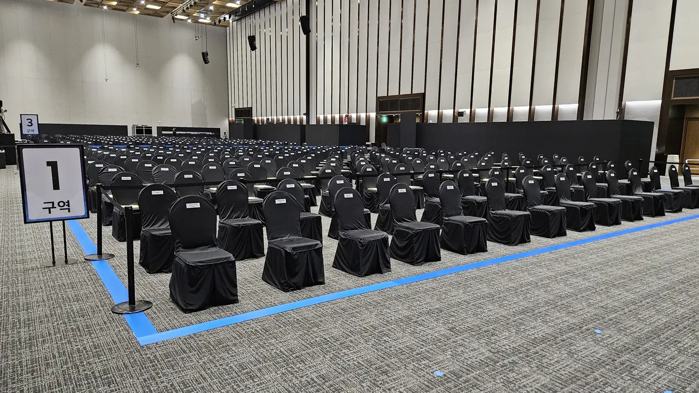

홈 › 블로그
Blog · Field Guide
행사 인력 블로그
진행요원 · 안내 요원 · 부스 운영 · 의전 · 통역 인력을 쓰는 행사 담당자가 먼저 확인할 것들을 현장 기준 체크리스트로 정리합니다.

현장 운영 · 2026년 11월 17일
VIP 의전 기본 동선 좌석 호칭 수행 순서 정리
VIP 의전의 기본은 동선, 좌석, 호칭, 수행 순서를 사전에 정해 두는 것입니다. 행사 담당자가 의전 인력과 맞춰야 할 항목을 단계별 체크리스트로 정리했습니다.

현장 운영 · 2026년 11월 17일
마라톤 급수대 안내 인력 운영 야외 행사 포인트
마라톤과 야외 행사의 급수대, 안내 인력 운영 포인트를 정리했습니다. 출발 구역의 혼잡, 급수대 배치, 우천 대비, 인력 교대까지 야외 행사 담당자가 확인할 항목을 봅니다.

인력 구성 · 2026년 11월 17일
박람회 부스 운영 인력과 제품 설명 인력에게 줄 자료
박람회 부스 운영 인력과 제품 설명 인력이 현장에서 막히지 않으려면 어떤 자료가 필요한지 정리했습니다. 제품 요약, 질문 답변, 응대 순서, 시연 절차를 자료별로 봅니다.

현장 운영 · 2026년 11월 17일
안내 요원 사전 브리핑에 꼭 넣어야 할 내용 체크리스트
행사 당일 안내 요원이 흔들리지 않게 하는 사전 브리핑의 구성을 정리했습니다. 행사 개요, 동선, 응대 문구, 보고 체계, 비상 상황까지 항목별 체크리스트로 봅니다.

현장 운영 · 2026년 11월 17일
주주총회 현장 운영 준비 체크리스트 접수 좌석 입장 동선
주주총회 현장 운영은 접수, 좌석 구역 안내, 입장 동선이 핵심입니다. 담당자가 사전에 정리해야 할 항목과 당일 인력의 역할을 체크리스트로 정리했습니다.

인력 구성 · 2026년 11월 17일
팝업스토어 운영 인력 구성 가이드 대기줄 응대 교대
팝업스토어 운영 인력은 입구 줄 관리, 매장 안 응대, 계산과 안내, 교대 인력으로 나눠 구성합니다. 역할별로 필요한 것과 오픈 전 점검 항목을 정리했습니다.

안전 · 2026년 11월 17일
행사 당일 비상 상황 대응 안전 교육에서 다루는 것
행사 당일 비상 상황 대응은 화재, 위급상황, AED 사용을 일반 상식 수준에서 미리 알려 두는 것에서 시작합니다. 현장 인력이 알아야 할 순서와 연락 체계를 정리했습니다.

계약 · 2026년 11월 17일
행사 인력 파견 계약 방식 고르기 7가지 언제 무엇을 쓰나
행사 인력 파견 계약 방식은 단기 프로젝트, 연간, 맞춤형, 상주 파견, 성과 연동형, 단계별, 긴급 지원 일곱 가지입니다. 행사 성격에 따라 언제 고르는지 정리했습니다.

인력 구성 · 2026년 11월 17일
행사 진행요원 인원을 정할 때 확인할 것 7가지
행사 진행요원 인원은 숫자 기준표가 아니라 역할, 위치, 시간대로 정합니다. 담당자가 인력 에이전시에 요청하기 전에 확인할 판단 항목과 질문을 정리했습니다.

인력 구성 · 2026년 11월 17일
행사 통역 인력을 요청할 때 미리 줄 자료 목록
행사 통역 인력을 요청할 때는 행사 개요, 진행 대본, 전문 용어, 발표 자료, 현장 조건을 미리 주어야 합니다. 담당자가 준비할 자료를 항목별로 정리했습니다.